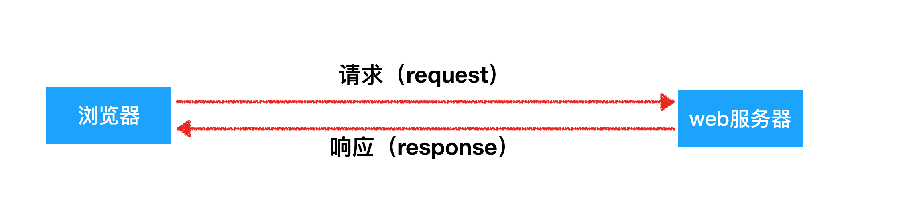

使用代理
学习目标：
- 会使用代理完成爬虫
- 明白代理的原理
1. 什么是代理
假设现在有个人A，要去C那里买台高端的Mac pro电脑，下面来理解代理
未通过中间人
A------------直接去买----------->C
通过中间人
A-----------找另外一个人B-----------让B去买----------->C
通俗的理解代理：
上述A到C那里买东西时，如果是让B去帮着实现的，此时B就是代理。就是一个帮别人干活的中间人
2. 为什么要使用代理
- 在一台电脑上发送多次请求之后，会被服务器察觉到。通过代理可以让服务器以为不是同一个客户端在请求
- 防止我们的真实地址被泄露，防止被追究
3. 未使用代理 VS 使用代理
未使用代理

使用代理
4. 获取代理ip的部分网站
其他的（仅供参考）
https://oxylabs.io/ https://scrapinghub.com/crawlera https://www.proxyrain.com/ https://proxy.mimvp.com/free.php?proxy=in_hp http://ip.zdaye.com/ http://www.mayidaili.com/free/anonymous/%E9%AB%98%E5%8C%BF http://http.taiyangruanjian.com/
5. 代理的使用
用法：
requests.get("http://www.baidu.com", proxies=proxies)
proxies的形式：字典
例如：
proxies = {
"http": "http://12.34.56.79:9527",
"https": "https://12.34.56.79:9527",
}
requests.get("http://www.baidu.com", proxies=proxies)
注意：暂时可以用的免费代理ip如下：
http://1.198.73.37:9999
http://171.80.3.115:9999
http://101.27.22.159:61234
http://113.128.8.22:61234
http://123.169.35.123:9999
http://112.111.217.150:9999
http://123.169.35.123:9999
http://123.163.97.177:9999
6. 代理IP的分类
根据代理ip的匿名程度，代理IP可以分为：
透明代理(Transparent Proxy)：透明代理虽然可以直接“隐藏”你的IP地址，但是还是可以查到你是谁
匿名代理(Anonymous Proxy)：使用匿名代理，别人只能知道你用了代理，无法知道你是谁
高匿代理(Elite proxy或High Anonymity Proxy)：高匿代理让别人根本无法发现你是在用代理，所以是最好的选择
毫无疑问使用高匿代理效果最好
从请求使用的协议可以分为3类：
- http代理
- https代理
- socket代理
不同分类的代理，在使用的时候需要根据抓取网站的协议来选择
7. 代理IP使用的注意点
反反爬
使用代理ip是非常必要的一种
反反爬的方式但是即使使用了代理ip，对方服务器任然会有很多的方式来检测我们是否是一个爬虫，比如：
一段时间内，检测IP访问的频率，访问太多频繁会屏蔽
检查Cookie，User-Agent，Referer等header参数，若没有则屏蔽
服务方购买所有代理提供商，加入到反爬虫数据库里，若检测是代理则屏蔽
所以更好的方式在使用代理ip的时候使用随机的方式进行选择使用，不要每次都用一个代理ip
代理ip池的更新
购买的代理ip很多时候大部分(超过60%)可能都没办法使用，这个时候就需要通过程序去检测哪些可用，把不能用的删除掉。
小结
- 在requests中使用代理，需要准备字典形式的代理，传递给proxies参数接收
- 不同协议的url地址，需要使用不同的代理去请求